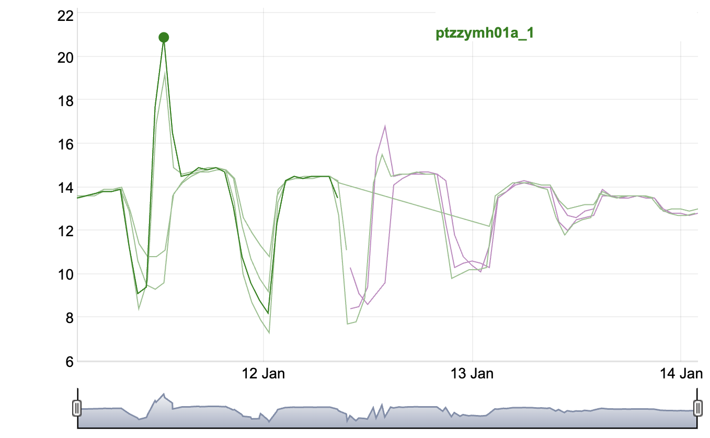
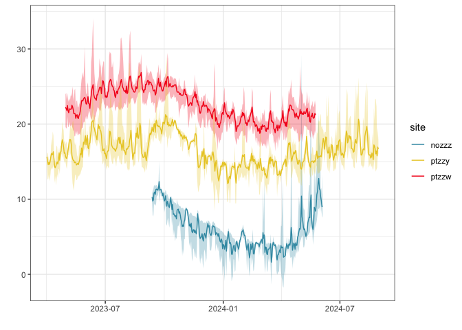

Functions to handle EnvLogger data, from reading, processing and plotting.
If data conforms to the CCTBON naming scheme, additional functionalities are available.
Installation
You can install the development version of envlogger from GitHub with:
# install.packages("devtools")
devtools::install_github("ruiseabra/envlogger")Example data
The package envlogger comes bundled with example data, including modified files that exemplify issues that the package’s functions can handle automatically. Use this dataset to get familiarized with the package’s capabilities.
# files included
lapply(env_example(), basename)
#> $log
#> [1] "log_2024-06-05_063724.csv" "log_2025-01-31_093212.csv"
#> [3] "log_2024-05-25_095701.csv" "log_2024-01-12_082832_bad_col.csv"
#> [5] "log_2025-01-14_070601.csv"
#>
#> $metadata
#> [1] "improper_file_name_meta.csv"
#> [2] "issuemh04a_0434_ef00_4b29_0a-20240116_132500_meta.csv"
#> [3] "4c0000002418fb41_meta.csv"
#>
#> $report
#> [1] "humidsc01a-0482_ac00_f27d_01-20250506_095113.csv"
#> [2] "improper_file_name.csv"
#> [3] "issuemh04a_0434_ef00_4b29_0a-20240116_132500.csv"
#> [4] "issuemc01a-04ad_e500_302d_06-20240525_101116_no_data.csv"
#> [5] "issuemc02a-04b4_3e00_c90f_0e-20240525_101121_low.csv"
#> [6] "issuemh01a-04d3_5e00_b818_02-20240525_095727_gap.csv"
#> [7] "issuemh02a-0449_0c00_2310_05-20240525_095804_1970.csv"
#> [8] "4c0000002418fb41.txt"
#> [9] "nozzzmc01a-0425_e500_051e_0b-20240605_063737.csv"
#> [10] "nozzzmc02a-04da_2800_d33a_0d-20240605_063925.csv"
#> [11] "nozzzmh01a-04fd_0b00_3805_0e-20240605_064147.csv"
#> [12] "nozzzmh02a-04a5_bb00_521c_0f-20240605_064246.csv"
#> [13] "pressmc01b-0405_f000_5411_01-20250131_093703.csv"
#> [14] "ptzzwmc01a-04ad_e500_302d_06-20240525_101015.csv"
#> [15] "ptzzwmc02a-04b4_3e00_c90f_0e-20240525_101121.csv"
#> [16] "ptzzwmh01a-04d3_5e00_b818_02-20240525_095727.csv"
#> [17] "ptzzwmh02a-0449_0c00_2310_05-20240525_095804.csv"
#> [18] "ptzzymc01a-04ce_ce00_4114_06-20240112_084047.csv"
#> [19] "ptzzymc02a-04cb_8f00_e758_05-20240112_083906.csv"
#> [20] "ptzzymh01a-04dc_6700_dd59_0f-20240112_082904.csv"
#> [21] "ptzzymh02a-04cb_cc00_1507_0c-20240112_083030.csv"
#> [22] "ptzzymc01a-04ce_ce00_4114_06-20250114_111522.csv"
#> [23] "ptzzymc02a-14cb_8f00_e758_05-20250114_111020.csv"
#> [24] "ptzzymh01a-04dc_6700_dd59_0f-20250114_111804.csv"
#> [25] "ptzzymh02a-04cb_cc00_1507_0c-20250114_111701.csv"
#>
#> $unsupported
#> [1] "unsupported_file_1.csv" "unsupported_file_2.csv" "unsupported_file_3.txt"
#> [4] "670000002f037841.txt"Read data
Use read_env() to import EnvLogger data into R. Supported files include: * EnvLogger data report files with data (not just the header) * EnvLogger log files * EnvLogger metadata files (created with create_metadata_file()) * Other data report files originating from devices other than EnvLoggers, as long as they are accompanied by an EnvLogger metadata file with values set for fields required for their correct interpretation
# here we use the package's example data, specifically
# targeting data from site "nozzz" (a rocky shore in Norway)
env <- read_env(
env_example("nozzz"),
show_progress = FALSE,
show_warnings = FALSE,
log_summary = TRUE)Logfile data contains a record of all interactions with EnvLoggers. It is useful mainly for tracing back experimental errors or recovering a forgotten logger password.
env$log
#> # A tibble: 9 × 8
#> time id serial v_log int res pass dev
#> <dttm> <chr> <chr> <dbl> <dbl> <dbl> <chr> <chr>
#> 1 2024-06-05 05:39:52 nozzzmc04a 0420 1b00 e501 07 7.3 3600 0.1 1111 armo…
#> 2 2024-06-05 05:41:01 nozzzmc05a 0480 1800 9d55 0b 7.3 3600 0.1 1111 armo…
#> 3 2024-06-05 05:41:49 nozzzmh01a 04fd 0b00 3805 0e 7.3 3600 0.1 1111 armo…
#> 4 2024-06-05 05:42:48 nozzzmh02a 04a5 bb00 521c 0f 7.3 3600 0.1 1111 armo…
#> 5 2024-06-05 05:43:28 nozzzmh03a 04e0 0400 5c02 0b 7.3 3600 0.1 1111 armo…
#> 6 2024-06-05 05:48:16 nozzzmh04a 0464 8b00 205c 03 7.3 3600 0.1 1111 armo…
#> 7 2024-06-05 05:49:51 nozzzmh05a 0410 0100 3404 07 7.3 3600 0.1 1111 armo…
#> 8 2024-06-05 05:50:31 nozzzmc02a 04da 2800 d33a 0d 7.3 3600 0.1 1111 armo…
#> 9 2024-06-05 05:51:35 nozzzmc02a 0425 e500 051e 0b 7.3 3600 0.1 1111 armo…Reports comprise the data collected by each logger. Depending on the params used, data may be shown separately for each data file, or joined by serial or even by id.
env$report
#> # A tibble: 4 × 12
#> id serial type v_log press hum data nrow min max
#> <chr> <chr> <chr> <chr> <lgl> <lgl> <list> <int> <dbl> <dbl>
#> 1 nozzzmc01a 0425 e500 051e … t 7.3 FALSE FALSE <tibble> 6425 -1.8 14
#> 2 nozzzmc02a 04da 2800 d33a … t 7.3 FALSE FALSE <tibble> 6425 -2.2 15.4
#> 3 nozzzmh01a 04fd 0b00 3805 … t 7.3 FALSE FALSE <tibble> 6425 -3.7 38.8
#> 4 nozzzmh02a 04a5 bb00 521c … t 7.3 FALSE FALSE <tibble> 6425 -4.1 38.8
#> # ℹ 2 more variables: t0 <dttm>, t1 <dttm>Handling issues and unsupported files
As datasets of environmental data grow larger, the occurrence of data report files that contain errors or follow different field formats becomes inevitable. Most errors tend to be benign, meaning that they hardly impact data quality and mainly just cause programming issues that prevent their easy and automatic interpretation. Examples of such errors include the presence of gaps, NAs in the time or data fields, or spurious temperatures outside realistic ranges (-80 °C), which are indicative of momentary/permanent logger faults. In such cases, envlogger can identify the issue and suggest a correction. Suggested corrections are only implemented automatically upon explicit command from the user, as doing otherwise could introduce changes to the data to which the user would be unaware (very unlikely, but unacceptable). On the other hand, there are instances when errors are complex and envlogger won’t be able to identify what exactly is wrong. A third situation involves the importing of data that wasn’t generated by EnvLoggers, and that therefore follows a different data organization format.
To handle most of the abovementioned situations, the envlogger package relies on metadata files. Metadata files are companion files - one per data file with issues - that contain information that ensures that the data file they are paired with can be properly imported. For benign errors, those files can be generated automatically by calling read_env(..., auto_generate_fixes = TRUE, auto_implement_fixes = TRUE). In that case, if issues are detected that the envlogger knows how to handle, new metadata files are created. Subsequent data imports using read_env(apply_fixes = TRUE) will result in those metadata files being read and the information they contain being used to correct all issues. This means that once a metadata file is created, so long that the metadata file is kept together with the its companion file, the issue(s) it targets will cease to be reported during any subsequent data imports - it is “fixed”. For files with different data layout formats, a metadata file must be created manually with a call to metadata_create_file() and, at a minimum, values for id, skip, time_format, and sep_dec_comma need to be set.
While relying on companion metadata files may seem a cumbersome approach, it ensures that the original data remains unaltered, preserving data integrity and guaranteeing that fixes can be reassessed - and even reversed - at any moment, even many years after. This aspect is so crucial, that it alone justifies the use of metadatada files.
issues <- read_env(env_example("issue"))
#> ℹ found 11 files in 2 folders
#> ✔ files read (n = 7) [5 reports, 2 metadata]
#> ✔ fix details found and applied (n = 2)
#> ℹ quality checks failed by some reports (n = 3/5)
#> ✔ RTC clock drifts corrected
#> ✔ no reports to join by serial
#> ✔ no reports to join by id
#> Warning: ℹ issues detected (total n = 7)
#> ℹ type ?create_metadata_file() to learn more about the issues listed below
#> ℹ access paths to files with unresolved issues using $files_with_issues
#> ℹ access paths to newly created metadata files using $files_created
#>
#> ✖ issues that remain unresolved (total n = 7)
#> → unsupported/no data files have not be imported
#> → files with quality issues have not be imported (issues must be resolved
#> first)
#> unsupported_file_1.csv ..............................................
#> (unsupported)
#> unsupported_file_2.csv ..............................................
#> (unsupported)
#> unsupported_file_3.txt ..............................................
#> (unsupported)
#> issuemc01a-04ad_e500_302d_06-20240525_101116_no_data.csv ............ (no data)
#> issuemc02a-04b4_3e00_c90f_0e-20240525_101121_low.csv ................ (min)
#> issuemh01a-04d3_5e00_b818_02-20240525_095727_gap.csv ................ (time gap
#> @ 2023-05-04 03:00:00)
#> issuemh02a-0449_0c00_2310_05-20240525_095804_1970.csv ...............
#> (tmin,time gap neg @ 2023-06-14 23:00:00)
#> As can be seen, the function read_env() provides detailed feedback about issues present in the data (set show_warnings to FALSE to disable that). Crucially, the output also contains the paths to the files with issues, and that can be used to make the creation of the metadata files easier.
# create a metadata file
new_file <- metadata_create_file(
issues$files_with_issues[1],
new_vals = list(id = "new_id")
)
# metadata_create_file() outputs the path to the new file created
file.exists(new_file)
#> [1] TRUEParsing information contained in logger ids
If used in a thoughtful way, logger custom names (hereafter referred as ids) can greatly reduce the difficulty of organizing the data collected with EnvLoggers, especially for large networks comprising data from dozens or even hundreds of loggers. While logger ids are restricted to 10 characters, a lot of important details can be coded into those ids.
The example data included has been collected using some of the ~3000 EnvLoggers of the CCTBON network (<www.coastalwarming.com/cctbon>), and therefore the custom names are set according to the CCTBON naming scheme. Specifically, CCTBON names are composed of: * 5 characters for site name (2 characters for country, 3 for site); THIS MUST BE UNIQUE WITHIN THE NETWORK * 2 characters for microhabitat type (in this case, one character codes shore height, the other the level of exposure to solar radiation) * 3 characters for replicate number (2 digits for replicate number, 1 character for device replacements)
In the example above we have four loggers from site “nozzz” (no = Norway + zzz = site ZZZ), all installed at the mid-shore level (m), half in areas of the shore with maximum local solar exposure (h = hot; we don’t use north/south because that doesn’t work across hemispheres) and the other half in crevices and other shaded areas (c = cold). There are 2 replicates in each microhabitat.
When the naming scheme used matches the CCTBON scheme, using the function parse_id_cctbon() generates new columns coding for site, level, exposure and replicate number. These will be important for subsequent analyses of the dataset that rely on the grouping of data based on those attributes.
In alternative, if the naming scheme is different, parse_id() provides a less immediate but more flexible way to parse logger ids.
# when logger ids follow a different naming scheme, ids can still be parsed
# note the new columns site, mic and rep
# note as well that parse_id acccepts "env" as a list or as a tibble (env$report),
# but, in both cases, the output consists only of env$report
parse_id(
env,
div = "1111122333",
fields = list(
site = "fct",
mic = c("mc", "mh"),
rep = "chr"
)
)
#> # A tibble: 4 × 15
#> id serial site mic rep type v_log press hum data nrow min
#> <chr> <chr> <fct> <fct> <chr> <chr> <chr> <lgl> <lgl> <list> <int> <dbl>
#> 1 nozzzmc… 0425 … nozzz mc 01a t 7.3 FALSE FALSE <tibble> 6425 -1.8
#> 2 nozzzmc… 04da … nozzz mc 02a t 7.3 FALSE FALSE <tibble> 6425 -2.2
#> 3 nozzzmh… 04fd … nozzz mh 01a t 7.3 FALSE FALSE <tibble> 6425 -3.7
#> 4 nozzzmh… 04a5 … nozzz mh 02a t 7.3 FALSE FALSE <tibble> 6425 -4.1
#> # ℹ 3 more variables: max <dbl>, t0 <dttm>, t1 <dttm>
# however, when logger ids conform to the CCTBON naming scheme, parsing ids is much simpler
# note the new columns site, lvl, exp, rep1 and rep2
(env <- parse_id_cctbon(env))
#> # A tibble: 4 × 17
#> id serial site lvl exp rep1 rep2 type v_log press hum data
#> <chr> <chr> <fct> <fct> <fct> <dbl> <chr> <chr> <chr> <lgl> <lgl> <list>
#> 1 nozzzmc… 0425 … nozzz m c 1 a t 7.3 FALSE FALSE <tibble>
#> 2 nozzzmc… 04da … nozzz m c 2 a t 7.3 FALSE FALSE <tibble>
#> 3 nozzzmh… 04fd … nozzz m h 1 a t 7.3 FALSE FALSE <tibble>
#> 4 nozzzmh… 04a5 … nozzz m h 2 a t 7.3 FALSE FALSE <tibble>
#> # ℹ 5 more variables: nrow <int>, min <dbl>, max <dbl>, t0 <dttm>, t1 <dttm>Adding other bits of information
If there are additional bits of information that may be useful for subsequent analyses, those can be added to the dataset using add_info(). A typical case is the appending of latlon coordinates. add_info() requires the presence of column names site, as information is added by site.
env <- add_info(
env,
info = data.frame(
treatment = 1,
site = "nozzz",
lat = 65,
lon = 10
)
)
env[, c("id", "site", "lat", "lon", "treatment")]
#> # A tibble: 4 × 5
#> id site lat lon treatment
#> <chr> <chr> <dbl> <dbl> <dbl>
#> 1 nozzzmc01a nozzz 65 10 1
#> 2 nozzzmc02a nozzz 65 10 1
#> 3 nozzzmh01a nozzz 65 10 1
#> 4 nozzzmh02a nozzz 65 10 1Inspecting data
The envlogger package has built-in features that ensure that data can be confidently imported and joined together by logger serial and id. However, it is always good practice to inspect the data and look for loggers that may have malfunctioned in a way that cannot be detected automatically (e.g., readings have drifted but remain within a valid range) or for inconsistencies at the joining points. To make that process simpler, call plot_env() with dy = TRUE, as that will produce an interactive dygraphs plot that can be zoomed and panned. Also, make sure to use the default col_by = "sgmnt". This will ensure that data collected by the same logger (i.e., same serial) that is contained in different files get colored differently, facilitating the identification and inspection of joining points. After inspecting the data and confirming that no issues are present, you can confidently proceed with data analysis.
env <- read_env(
env_example("ptzzy"),
show_progress = FALSE,
show_warnings = FALSE)
env <- tidyr::unnest(env$report, data)
env <- dplyr::filter(env, dplyr::between(t,
as.POSIXct("2024-01-11", tz = "UTC"),
as.POSIXct("2024-01-14", tz = "UTC"))
)
plot_env(env, dy = TRUE)
# notice how ids ptzzymh01a and ptzzymc01a are represented by
# one green segment until Jan 12, and a purple segment afterwards
# (on Jan 12 data was downloaded and the logger memories erased,
# while data from that date onwards was downloaded at a later moment,
# leading to the entire dataset being contained in two separate files)
Summarising and Visualizing
The main goal of the envlogger package is to facilitate the importing and curating of large sets of EnvLogger data. Nevertheless, additional tools are provided for quickly summarising and visualizing large datasets. This is accomplished using the summarise_env() function and the ggplot2 options of plot_env().
# summarising often requires data at the exact same timestamps
# to have that, we can provide a value for new_interval, which
# will result in all data being interpolated to that new time interval
env <- read_env(
env_example(c("ptzzw", "ptzzy", "nozzz")),
new_interval = 60,
show_progress = FALSE,
show_warnings = FALSE)$report
env <- parse_id_cctbon(env)
# compute daily q10, mean and q90 for each site
env_summarised <- summarise_env(
env,
by_day = TRUE,
by_site = TRUE,
fun_list = list(
ymin = function(x) quantile(x, 0.1),
temp = function(x) mean(x),
ymax = function(x) quantile(x, 0.9)
)
)
plot_env(env_summarised, gg_ribbon = TRUE, col_by = "site")
# apply a rolling monthly average to each stat
env_roll <- summarise_env(
env,
by_day = TRUE,
by_site = TRUE,
fun_list = list(
ymin = function(x) quantile(x, 0.1),
temp = function(x) mean(x),
ymax = function(x) quantile(x, 0.9)
),
roll_days = 30
)
plot_env(env_roll, gg_ribbon = TRUE, col_by = "site")